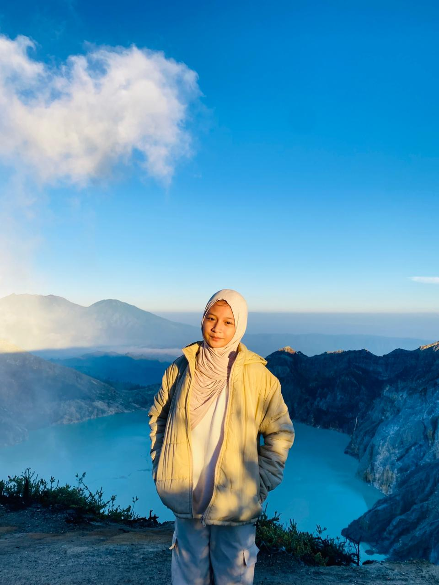
Happy Birthday My Love
Selamat Ulang Tahun,
Sayangku, Cantikku! ✨
Selamat ulang tahun sayang. Ada yang nambah umur nih jadi 17 tahun, selamat ya sayang, aku harap setelah kamu baca surat ini kamu bakal seneng hehe, maaf aku cuma bisa buat yang sesederhana ini.
Surat Untuk Arumi yang Cantik
Halo Sayangku,
Selamat bertambah usia sayangkuu cantikkuu arumikuu yangg lucuuu,semoga dengan bertambahnya umurmu kamu bisa jadi orang yang lebih baik lagii yaa. Semoga di permudah segala urusannya,di permudah rezekinya dan apa yang kamu inginkan tercapai semua, aamiinnnnnn...
Terima kasih sudah tumbuh menjadi wanita yang luar biasa, kamu hebat dan kamu kuat, aku harap kamu bisa lebih kuat lagi menghadapi semua badai yang sudah menanti di depan, kita akan melewatinya bersama.
Aku berharap di usia kita yang sudah sama sama bertambah dewasa, kita bisa lebih serius lagi buat jalanin hubungan ini, kita akan melewati semuanya bersama sama. Aku cuma berharap kamu yang jadi istriku nanti sampai aku mati bahkann sampai selamanya. Aku selalu ada di sisi kamu untuk mendukung dan menyayangi kamu.
Maaf jika aku belum bisa menjadi laki laki yang sempurna buat kamu, maaf jika aku belum jadi yang terbaik di mata kamu, maaf jika masih banyak yang belum aku perbaiki dari aku menjadi seperti yang kamu mau, tapi percayalah aku sayanggg bangett sama kamuuu.
Kamu itu orang yang special banget bagi aku, aku sayang banget sama kamu, aku harap kamu terus sama aku dan ga pernah ninggalin aku sampe kapanpun😥😥, jangan pernah tinggalin aku ya sayang, setiap badai emang rasanya kayak susah buat di lewati, tapi kita harus tetep bareng buat ngelewati badai itu dan menyelesaikan semua badai yang datang. Sesulit apapun kita jangan sampe putus ya, selalu inget janji kita ya, pokoknya kalo kita udah sama sama sukses harus nikah ya, awas aja nikah sama orang lain heumm... maaf ya sayang kalo aku masih sering egois, dan selalu kalah sama egoku, maaf belum bisa jadi cowo yang baik, maaf juga belum bisa jadi cowo kayak yang kamu mau, aku selalu berharap sama kamu sampe selamanya, sekali lagi maaf ya sayang kalo aku belum bisa jadi kebanggaanmu, aku ga pernah nyesel ketemu kamu, malah aku sangat bersyukur ketemu sama kamu di hidup yang singkat ini, kalo aku ngelakuin kesalahan ingetin ya jangan di biarin atau di marahin, tegur aku baik baik ya, dan maaf juga kalo aku ga pernah dengerin kamu hihihi, jangan pernah bosen ngingetin aku ya, maaf juga selama ini aku terlalu mengekang kamu, karena aku sayang sama kamu hihihi... I ALWAYS LOVE YOU SAYANGKUUU❤️❤️❤️❤️❤️ AKU PENGEN KITA ABADI SAMPE SELAMANYA...
Dengan seluruh cintaku,
— Kevvin Hariska Wijaya ❤️
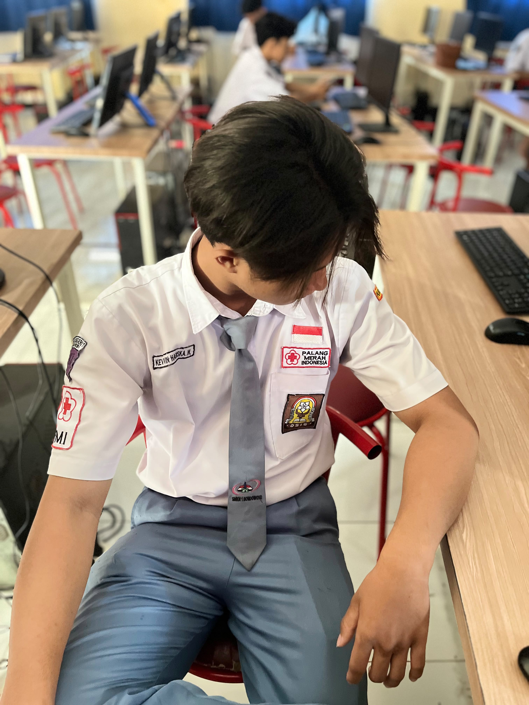
Kamu sayang ga sama orang ganteng ini? 🥺
Jawab yang jujur yaa, gak boleh bohong! hihi~
dan Momen Indah Kita 🍃🌹
Sebenernya banyak lagi sih fotbarnya hehe


Koleksi foto fotomu yang lucu dan cantik
Fotonya si banyak ya di hp ku tapi webnya yang ga cukup hehe...
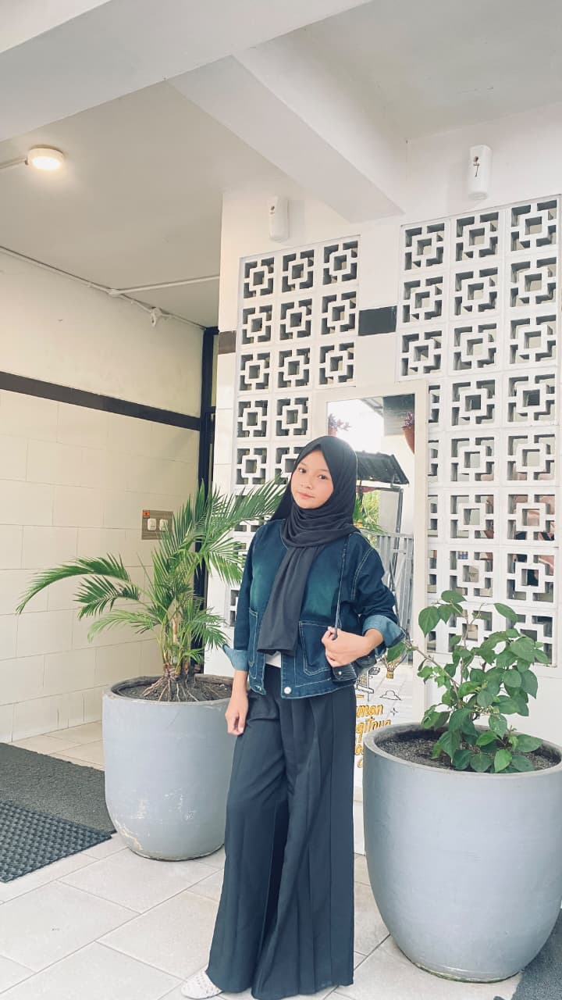
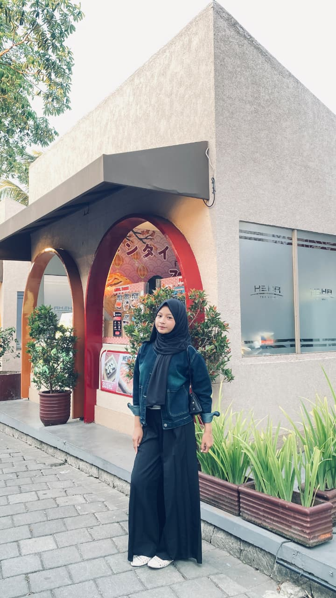
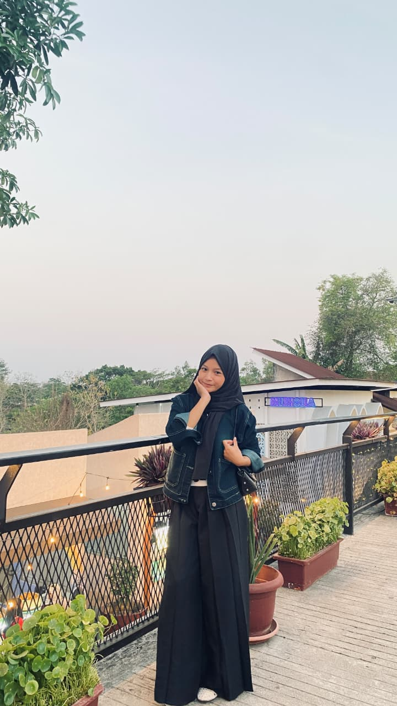
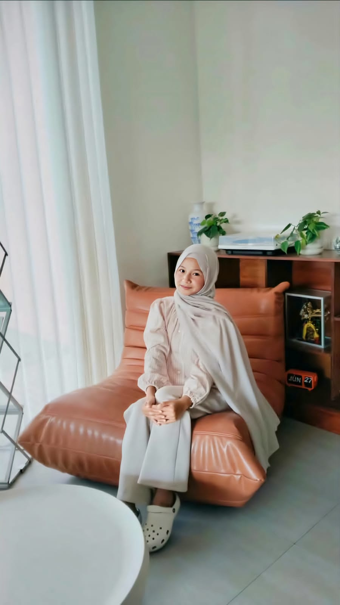
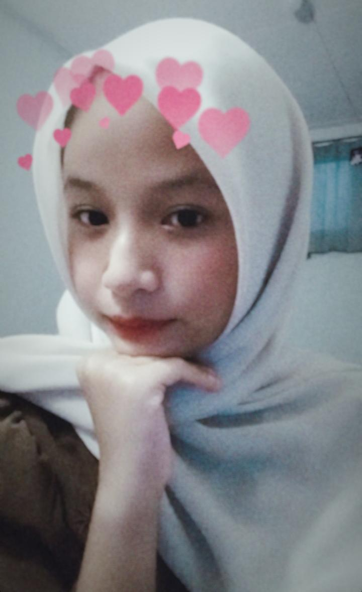
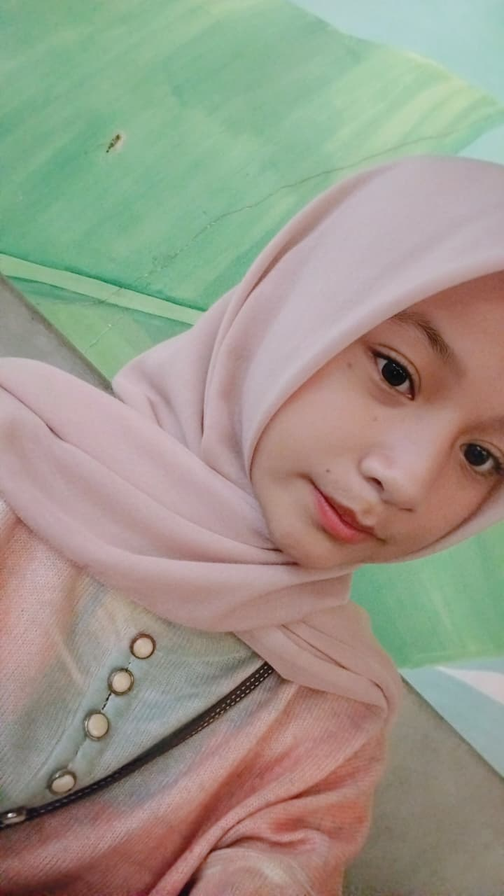
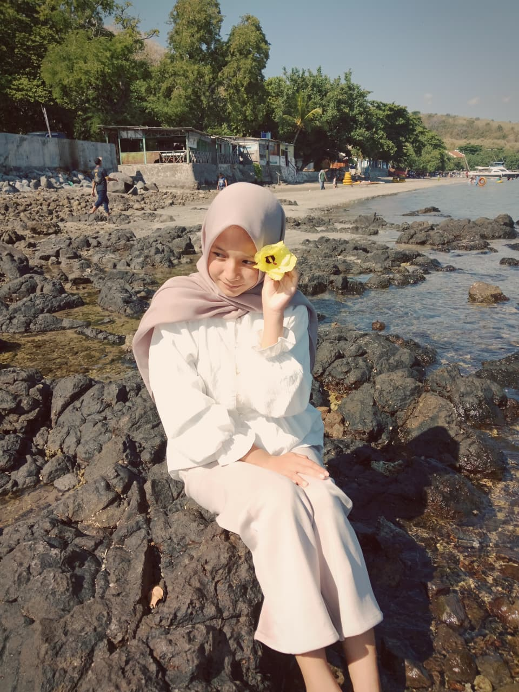
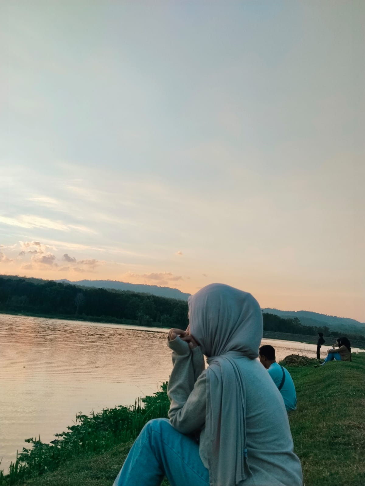
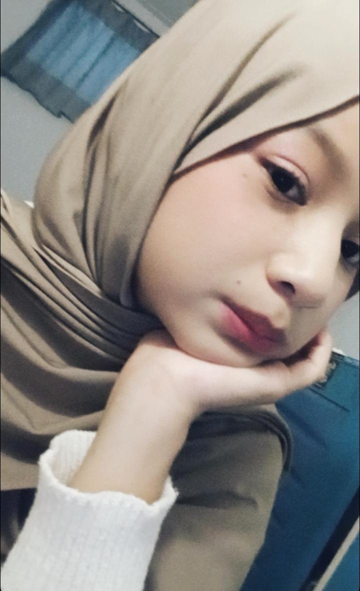
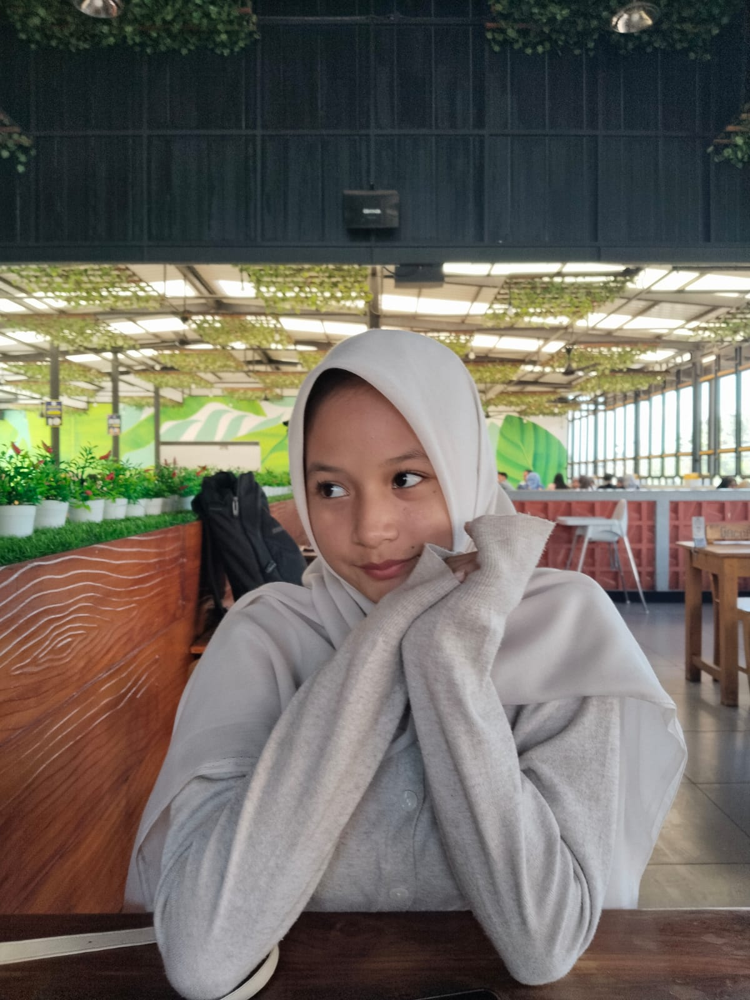
Garis Waktu Perjalanan Kita ⏳💖
Coba scroll ke bawah buat liat perjalanan kitakita.
12 Mei 2023
Awal mula aku ngechat karena suka, hihi~
9 Juni 2023
Jujur gugup bangett waktu itu hehe~
13 Juni 2023
Dan akhirnya statusnya jelas hehe~
21 Juni 2023
Putus karena belum di restuin huhu~
Ulang Tahunmu yang ke-3
Semoga kita selalu bareng sampe kapanpunnn hehe~btw lupa tanggal balikannya.
Pertanyaan Terakhir...
Kamu sayang ga sama aku, dan apa kamu mau terus sama aku sampe selamanya? 🥺✨
YAY!! I LOVE YOU SO MUCH! ❤️
Makasi ya udah mau nemenin aku sampe sekarang dan selamanya hihi.